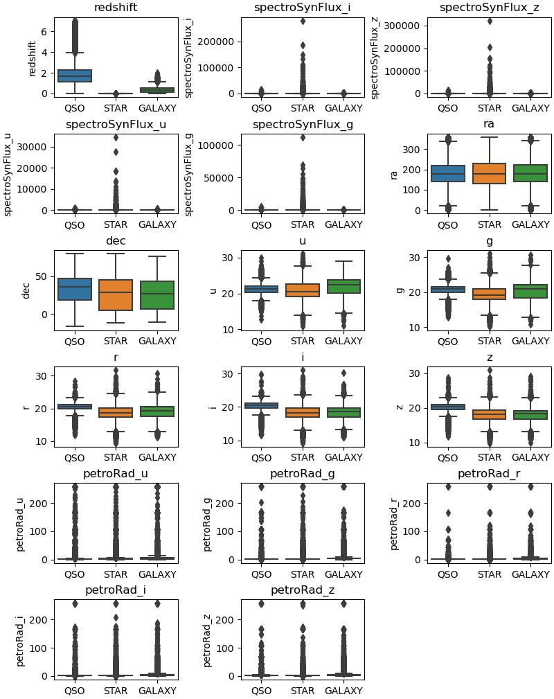
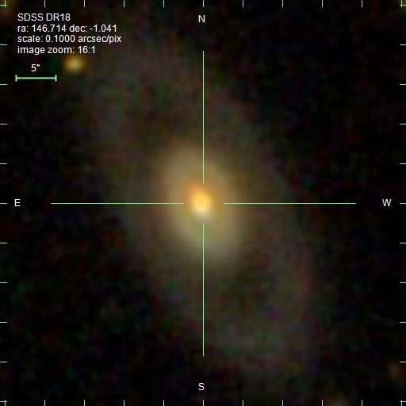
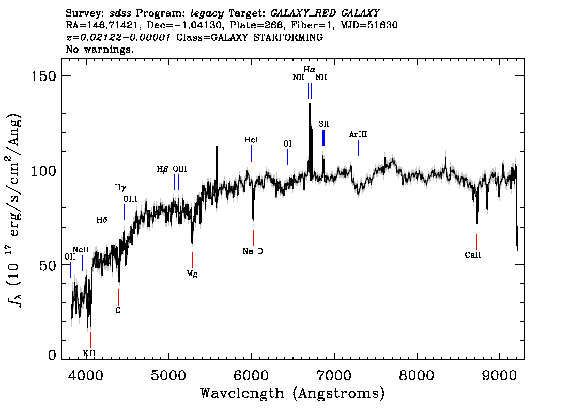
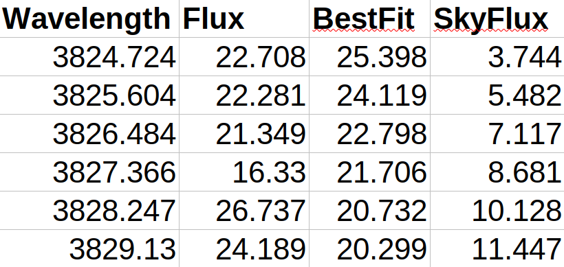
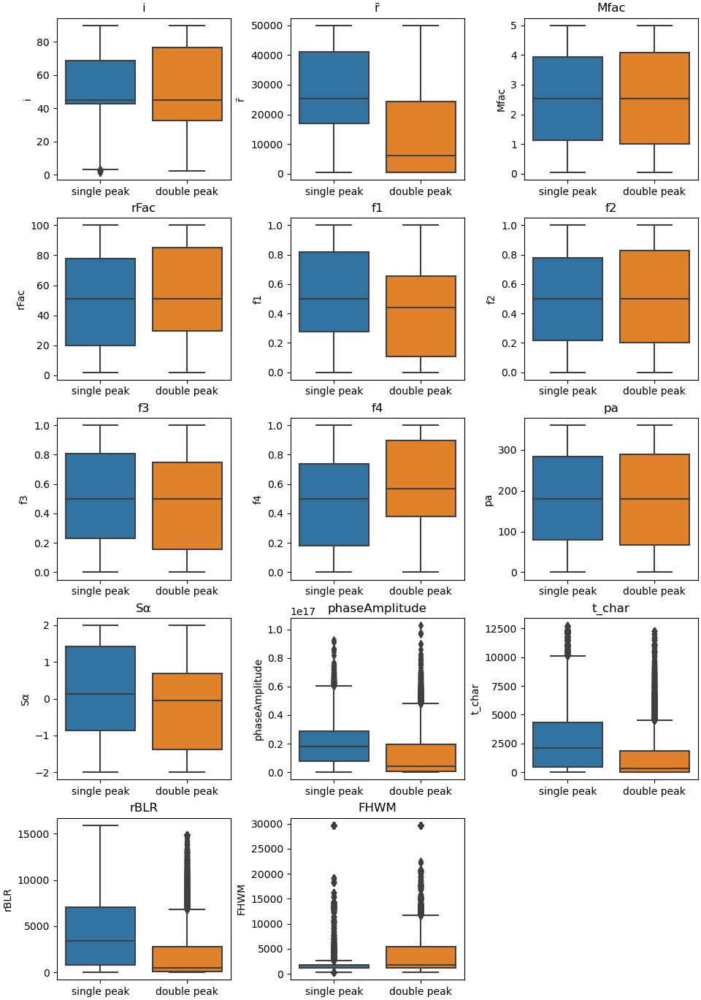
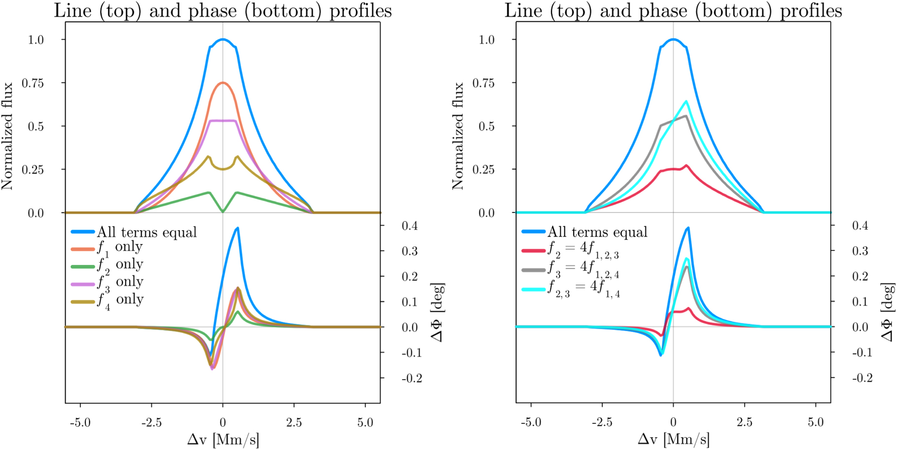
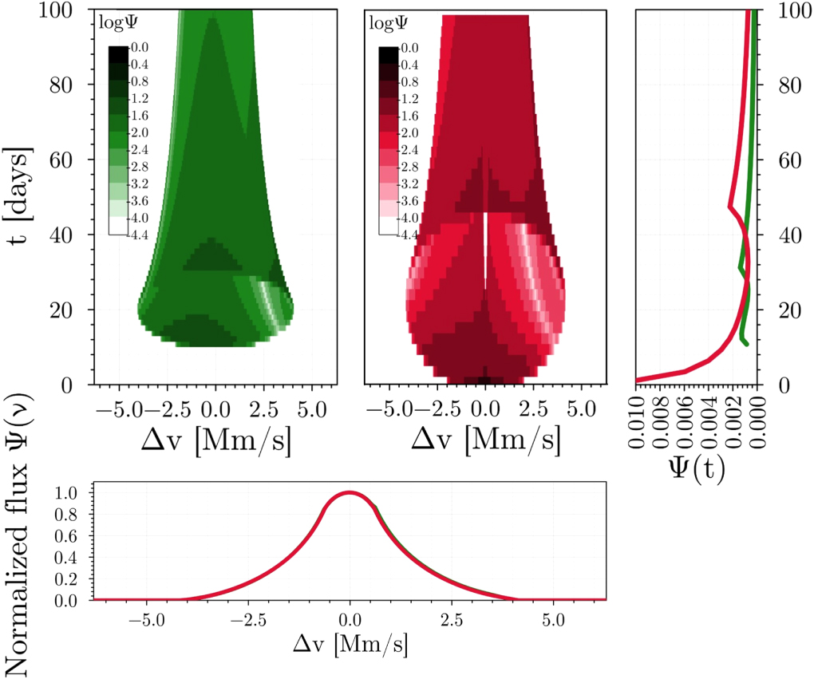

DataPrep/EDA
Observational data
There are a variety of public astrophysics datasets available, but perhaps the best / most consistent for large amounts of observational data comes from the Sloan Digital Sky Survey (SDSS). SDSS first began taking data in 2000, and has since released 18 data releases (DR) of data. It has imaged over 1/3 of the sky and contains photometric observations of around 1 billion objects, with more detailed spectral observations of more than 4 million objects. The size, consistency, and quality of the data makes it an ideal dataset for machine learning applications. To address the questions posed in the Introduction, we will obtain quasar, galaxy, and star data from SDSS, using the most recent data release (DR18).
Fortunately, SDSS makes all of their data publicly accessible through a variety of APIs. The SDSS database can be accessed through SkyServer. We can query the database programmatically using SQL syntax from the https://skyserver.sdss.org/dr18/SkyServerWS/SearchTools/SqlSearch? endpoint. SDSS data releases are cumulative, so we can query the database for all objects SDSS has ever observed by accessing the "dr18" folder. From there we must tell the server that we are looking to use the SQLSearch tool on SkyServer, information which is contained in the latter half of the URL. To successfully query the database, we must provide a valid SQL query with the "cmd" parameter. For example, to obtain the locations on the sky of the first 10 stars in the database we would construct the following SQL query:
SELECT TOP 10
p.ra,p.dec
FROM PhotoObj AS p
JOIN SpecObj AS s ON s.bestobjid = p.objid
WHERE
s.class = 'STAR'
But we're not done yet. To actually get the data, we must send a GET request to the URL with the SQL query as a parameter, and to do this we have to reformat things a little bit. To format this correctly for our request, we have to replace many of the characters in the query with their URL encoded equivalents. For example, spaces become "%20", and the equals sign becomes "%3D". We also need to tell the server what kind of format we would like our output in by appending the "&format=" parameter, and if we want to give the resulting table a name via the "&name=" parameter. It's best not to hard-code the number of objects to return either, but we can set up our function to allow this as a free parameter we can change. We can accomplish these tasks in Python with the help of regex (via the "re" module), executing the final GET request using "wget" from the command line (which we access with the "os" module in Python). The following function takes a SQL query like the one above, reformats it and combines it with the SkyServer endpoint to form a functional URL, then executes the GET request in the terminal to actually obtain the data, returning the URL for debugging:
import os, re
def getObjTable(SQL_query, format="csv", fname="queryResults", TableName="",N=100000):
"""Retrieve table of N SDSS objects using SQL query
params: SQL_query [str] - SQL query to be executed
format [str] - format of table, options are 'csv', 'html', 'xml', 'json'
TableName [str] - name of table, default is empty string
N [int] - number of objects to retrieve, default is 100000, limit is 500000
returns: query [str] - url of reformatted query, downloaded with wget and saved as {fname}.{format}
"""
SQL_query = SQL_query.format(N)
base_url = "https://skyserver.sdss.org/dr18/SkyServerWS/SearchTools/SqlSearch?cmd="
SQL_formatted = re.sub(r"\n", "%0D%0A", SQL_query)
SQL_formatted = re.sub(r"\+", "%2B", SQL_formatted)
SQL_formatted = re.sub(r"\s", "+", SQL_formatted)
SQL_formatted = re.sub(r"=", "%3D", SQL_formatted)
SQL_formatted = re.sub(r",", "%2C", SQL_formatted)
SQL_formatted = re.sub(r"'", "%27", SQL_formatted)
SQL_formatted = re.sub(r"\(", "%28", SQL_formatted)
SQL_formatted = re.sub(r"\)", "%29", SQL_formatted)
query = base_url + SQL_formatted + "%0D%0A%0D%0A&format={0}&TableName={1}".format(format, TableName)
os.system("wget -O {0}.{1} '".format(fname,format) + query + "'")
return query
To accomplish the goals of this project we're going to need a lot more data than just the location of a few stars, however. In reality, we will need a lot of data on stars, galaxies, and quasars, and we will want to compare many parameters against each other. A good starting point for parameters would probably be to return the position (ra and dec), redshift (a measure of how far away an object is), the spectral flux in each band, the apparent brightness in each imaging band, the estimated on-sky size in each imaging band, the time each observation was taken (to account for objects with multiple observations), as well as other identifying info we can use to query different APIs later. Thus, a full sample SQL command that is more useful would go something like:
SELECT TOP 500000
s.specObjID, s.class, s.z as redshift, s.zErr as redshiftError, s.spectroSynFluxIvar_u, s.spectroSynFluxIvar_g, s.spectroSynFluxIvar_r, s.spectroSynFluxIvar_z, s.spectroSynFluxIvar_i, s.spectroSynFlux_i, s.spectroSynFlux_z, s.spectroSynFlux_u, s.spectroSynFlux_g, s.plate, s.mjd, s.fiberid, s.run2d, p.objid, p.ra, p.dec, p.u, p.g, p.r, p.i, p.z, p.fieldID, p.err_u, p.err_g, p.err_r, p.err_i, p.err_z, p.petroRad_u, p.petroRad_g, p.petroRad_r, p.petroRad_i, p.petroRad_z, p.petroRadErr_u, p.petroRadErr_g, p.petroRadErr_r, p.petroRadErr_z, p.petroRadErr_i
FROM PhotoObj AS p
JOIN SpecObj AS s ON s.bestobjid = p.objid
WHERE
(s.class = 'GALAXY') AND (zWarning = 0)
getObjTable on this SQL command would thus return 500,000 galaxies with the above parameters. We can then repeat this process for stars and quasars by changing the "s.class" parameter to "STAR" and "QSO" respectively. In this way we have obtained a good starting point in terms of observational data for the project — a combined sample of more than a million objects with spectra (more than 1/4 of all of what is available in SDSS).
In total these CSV files run about 200 MB each, so altogether this is a substantial amount of data.
Let's look at a sample of what some of this returned data looks like. Opening the CSV with all of the quasar data, the first few rows of (uncleaned) data look something like this:
Fortunately for us a lot of the cleaning steps have already been taken care of by the SDSS data reduction pipeline, and in addition we've added an additional parameter to our SQL query command to only return information on objects with an identified redshift (that's what the "zWarning" parameter does in the SQL query above). But even with these great steps the data is still not perfect — for example in a few of the rows displayed here there are suspicious "-1000" values for some of the radius calculation errors, which is obviously incorrect and is in fact a flag added by the pipeline indicating that the radius value in that band should note be trusted. We can check these things and clean the data in Python by reading our CSV files into a pandas DataFrame:
import pandas as pd
df_QSO = pd.read_csv("QSO_querySample.csv",header=1) #column names are at index 1 since row 0 is the table name
df_STAR = pd.read_csv("STAR_querySample.csv",header=1)
df_GAL = pd.read_csv("GAL_querySample.csv",header=1)
combined_df = pd.concat([df_QSO,df_STAR,df_GAL]) #combine all three dataframes into one as they share the same columns
total_missing = sum(combined_df.isnull().sum()) #df.isnull().sum() returns the number of missing values in each column, sum() sums over all columns
duplicated = combined_df.duplicated().sum()
print("Missing values: {0}\nDuplicated values: {1}".format(missing,duplicated))
Missing values: 0
Duplicated values: 0
exclude = ["specObjID","class","run2d","objid","fieldID","plate","mjd","fiberid","ra","dec","redshift","sepctrSynFlux_i","spectroSynFlux_z","spectroSynFlux_u","spectroSynFlux_g"] #exclude these columns as they are identifers or allowed to be negative
for col in combined_df.columns:
if col not in exclude: #skip excluded columns
negMask = combined_df[col] < 0
numNeg = negMask
if numNeg > 0:
print("{0} has {1} negative values with mean {2} (negative values only)".format(col,numNeg,combined_df[col][negMask].mean()))
redshiftError has 2489 negative values with mean -1.5484130172760144 (negative values only)
u has 95 negative values with mean -9999.0 (negative values only)
g has 92 negative values with mean -9999.0 (negative values only)
r has 71 negative values with mean -9999.0 (negative values only)
i has 82 negative values with mean -9999.0 (negative values only)
z has 89 negative values with mean -9999.0 (negative values only)
err_u has 95 negative values with mean -9999.0 (negative values only)
err_g has 92 negative values with mean -9999.0 (negative values only)
err_r has 71 negative values with mean -9999.0 (negative values only)
err_i has 82 negative values with mean -9999.0 (negative values only)
err_z has 89 negative values with mean -9999.0 (negative values only)
petroRadErr_u has 404331 negative values with mean -1002.1143691678352 (negative values only)
petroRadErr_g has 236429 negative values with mean -1003.4636571655761 (negative values only)
petroRadErr_r has 72823 negative values with mean -1008.7737253340291 (negative values only)
petroRadErr_z has 61760 negative values with mean -1012.6767001295336 (negative values only)
petroRadErr_i has 22191 negative values with mean -1033.2530305078635 (negative values only)
- For each object we will check if the size error is contained to less than two bands (i.e. an error only in the u and g bands but not in the g, r, z, or i bands). This can happen because different types of objects emit in different colors, so an object may have no "size" at one color but still a distinct size at another.
- If the error is in less than two of the imaging bands, we will compare the magnitude of the object in the different imaging bands.
- If the magnitude in the corresponding bands is much smaller than the magnitude in the other bands, this likely means the object just doesn't emit enough light in those bands to have a quantifiable size, and thus we will replace the bad value with 0.
- If conversely the errors extend to more than two bands, or the object is plenty bright in the bands with the size errors, we will then drop it from the dataset.
#drop rows with negative values in imaging bands/errors and errors in redshifts
mask = (combined_df["u"] > 0) & (combined_df["g"] > 0) & (combined_df["r"] > 0) & (combined_df["i"] > 0) & (combined_df["z"] > 0) & (combined_df["err_u"] > 0) & (combined_df["err_g"] > 0) & (combined_df["err_r"] > 0) & (combined_df["err_i"] > 0) & (combined_df["err_z"] > 0) & (combined_df["redshiftError"] > 0)
combined_df = combined_df[mask]
df_noSize = combined_df.drop(columns=["petroRad_u","petroRad_g","petroRad_r","petroRad_i","petroRad_z","petroRadErr_u","petroRadErr_g","petroRadErr_r","petroRadErr_i","petroRadErr_z"]) #create a new dataframe without size information
df_noSize.to_csv("combined_noSize.csv",index=False) #save the resulting dataframe to a new CSV file
#clean size columns
df_wSize = combined_df.copy() #create a copy of the dataframe to clean the size columns
cols2Check = ["petroRadErr_u","petroRadErr_g","petroRadErr_r","petroRadErr_i","petroRadErr_z"] #need at least one to have an error
mask = df_wSize[cols2Check] < 0
errCounts = np.sum(mask,axis=1)
inds2Check = np.where((errCounts <= 2) & (errCounts > 0))[0] #get the indices of the rows with size errors in less than 2 bands
discard = np.where(errCounts > 2)[0] #throw away rows with errors in more than 2 bands
for i in inds2Check: #note that this takes a few minutes to run...probably a more efficient way but only needs to be done once!
mags = df_wSize.iloc[i][["u","g","r","i","z"]] #magnitudes in each band
total = sum(mags)
badBands = [j for j in range(len(cols2Check)) if mask.iloc[i][j]]
badMags = [mags[j] for j in badBands]
badTotal = sum(badMags)
if badTotal/total < 0.1: #if the object is not bright in the bands with the size errors, replace the size errors with 0
colNames = ["petroRad_u","petroRad_g","petroRad_r","petroRad_i","petroRad_z"]
toReplace = [colNames[j] for j in badBands]
df_wSize.iloc[i][[toReplace]] = 0.0
toReplace = [cols2Check[j] for j in badBands]
df_wSize.iloc[i][[toReplace]] = 0.0 #set the error also to "zero" to indicate that we replaced this size
else: #otherwise throw out the row
np.append(discard,i)
df_wSize.drop(index=discard,inplace=True)
df_wSize.to_csv("combined_wSize.csv",index=False) #save the resulting dataframe to a new CSV file
We can get a quick-look at all this data by generating a simple boxplot of the different parameters by object type. We can do this in python with the help of the matplotlib and seaborn packages:
def visualizeDF(df,cols2Plot,x,nc=3):
"""Visualize dataframe as boxplot
params: df [pandas dataframe] - dataframe to visualize
cols2Plot [list] - list of columns to plot
x - x variable for box plot
nc [int] - number of columns to plot per row
returns: fig,ax [matplotlib figure, axis] - figure and axis of plot
"""
Nc = len(cols2Plot)
nr = int(np.ceil(Nc/nc)) #number of rows needed to plot all data columns with nc columns per row
fig, axs = plt.subplots(nr, nc, figsize=(16*(nc/nr),12*(nr/nc)),constrained_layout=True)
for i, column in enumerate(cols2Plot):
ax = axs.flatten()[i]
try:
sns.boxplot(x=x, y=df[column], ax=ax)
ax.set_title(column)
ax.set_ylabel(column)
ax.set_xlabel('')
except:
"error at column {0}".format(column)
for i in range(nr*nc-Nc):
fig.delaxes(axs.flatten()[-(1+i)]) #delete extra axes
return fig,axs

Visualizing SDSS data
Of course, a natural question would be to ask — what do these objects actually look like? Astronomers are blessed to study beautiful things, and fortunately SDSS makes it easy to query their API for more detailed images and spectral data for any of the objects in their database. SkyServer also hosts images for every object, which we can obtain from the "http://skyserver.sdss.org/dr18/SkyServerWS/ImgCutout/getjpeg?" endpoint by providing at least the ra and dec of the object as the "ra" and "dec" parameters. We will accomplish this task again in Python with a custom function that formats the url appropriately and sends a GET request via the system's wget:
def getImg(id,opt="GL",width=512,height=512,scale=0.4):
"""Retrieve images of SDSS objects
params: id [dict] - dictionary of object identifiers, requires at least 'specObjID', 'ra', and 'dec'
opt [str] - options for image cutout, documentation: https://skyserver.sdss.org/dr14/en/help/docs/api.aspx#imgcutout; defaults to 'GL' (grid + label)
width [int] - width of image in pixels
height [int] - height of image in pixels
scale [float] - scale of image in arcsec/pixel
returns: url [str] - url of image cutout, downloaded with wget and saved as images/image_{specObjID}.jpeg
"""
url = "http://skyserver.sdss.org/dr18/SkyServerWS/ImgCutout/getjpeg?ra={0}&dec={1}&width={2}&height={3}&scale={4}&opt={5}".format(id['ra'],id['dec'],width,height,scale,opt)
os.system("wget -O images/image_{0}.jpeg '".format(str(int(id['specObjID']))) + url + "'")
return url

getImg and passing the options "GL" to obtain the grid and label.
To use this function we must also have a dictionary of object identifiers, which we can obtain from the CSV files we downloaded earlier. For example, to get the image of the first galaxy in the CSV file (assuming that earlier we saved it as "GAL_query.csv") we would do:
def getID(row,fname):
row += 2 # skip table name + column names
with open(fname,"r") as f:
lines = f.readlines()
d = lines[row].split(",")
colNames = lines[1].split(",")
return dict(zip(colNames,d))
firstGalID = getID(0,"GAL_query.csv")
getImg(firstGalID) # returns url of image, downloads image to images/image_{specObjID}.jpeg
We can see that it works, and obtains a nice image of a galaxy. All of the useful parameters we get from a visual image have already been downloaded from the database (i.e. the brightness and object size in different bands), but it's still fun to look at! But what about the spectra? SkyServer also hosts pre-reduced spectra for each object, which we can download from the https://skyserver.sdss.org/dr18/en/get/specById.ashx? endpoint by passing the object's specObjID as the "ID" parameter. However, SkyServer only produces "quick-looks" of the spectra, which are useful for visual diagnostics but unfortunately does not contain the actual spectral data. To obtain the actual data in a machine readable format we must query the Science Archive Server (SAS) endpoint at http://dr18.sdss.org/optical/spectrum/view/data/format={format}, where the format can be "csv" or "fits". "Fits" (short for flexible image transport system) are a common binary format for astronomical data, but they can be a little harder to work with than just a standard CSV file. We must also append the spectral identifiers to the url via the "spec", "plateid", "mjd", "fiberid", and "run2d" parameters. We'll again accomplish all of this via a custom Python function that will return the spectrum in the format we want based on an "id" dictionary (like we created above):

getSpectrum.
def getSpectrum(id,format='png',spec='lite'):
"""Retrieve spectra of SDSS objects
params: id [dict] - dictionary of object identifiers, requires at least 'specObjID'
format [str] - format of spectrum, options are 'png', 'fits', 'csv'
spec [str] - either 'lite' (default) or 'full'
returns: url [str] - url of spectrum, downloaded with wget and saved as spectra/spectrum_{specObjID}.{format}
"""
if format == 'png':
base_url = "https://skyserver.sdss.org/dr18/en/get/specById.ashx?ID="
url = base_url + str(int(id['specObjID']))
elif format == 'fits' or format == 'csv':
url = "http://dr18.sdss.org/optical/spectrum/view/data/format={4}/spec={5}?plateid={0}&mjd={1}&fiberid={2}&reduction2d={3}".format(str(int(id['plate'])), str(int(id['mjd'])), str(int(id['fiberid'])), str(int(id['run2d'])),format,spec)
os.system("wget -O spectra/spectrum_{0}.{1} '".format(str(int(id['specObjID'])),format) + url + "'")
return url
getSpectrum(firstGalID) # returns url of spectrum, downloads spectrum to spectra/spectrum_{specObjID}.{format}, in this case downloading the quick-look png by default.
This is a great default visualization, but here there is data we will want to access that is not included in the data-base parameter download from earlier. If we opt to download the spectrum as a CSV or FITS file we can access the individual flux values obtained by the instrument at every wavelength, which is useful because we may want to compare just portions of the spectra (i.e. where a strong common spectral line exists) from one object to another.

getSpectrum(firstGalID,format='csv').
Here we see the actual spectral data contains four columns: Wavelength, Flux, BestFit, and SkyFlux. Wavelength is the x-axis quantity of the plot shown above (in units of Angstroms), while the other three columns tell us how much light was seen at that wavelength with a few different classifications. The "Flux" column contains simply the raw "flux" from the detector while the "BestFit" column contains the value from a best fit model to the entire spectrum. The "SkyFlux" column contains how much light at that wavelength was detected from the background sky, not the actual object itself. All three of these columns have units of flux as shown on the y-axis of the spectrum plot. What goes into the model "BestFit" category is very complicated, and the culmination of several decades of instrumentation and astrophysical modelling, and for the rest of the project we will use this column whenever using spectral data, although we will compare and check how this choice may influence results by using the standard "Flux" column.
Distinguishing between stars, galaxies, and quasars with spectra
When first obtaining our data, we had to use the "class" identifier from the SpecObj table to distinguish between stars, galaxies, and quasars. But how does SDSS actually determine this? The answer is through spectra. While in our first example it was pretty clear from the photograph that the object in question was a galaxy, oftentimes galaxies are so far away that they appear as faint smudges of light on the sky, and they can be hard to tell apart from stars. Take the following three images, for example:
One is a galaxy, one is a star, and one is a quasar. But which is which? Looking at each object's spectra yields the clues we need to determine this:
The star is leftmost, the galaxy in the middle, and the quasar on the right. While they might be harder to identify with the images alone, the spectra look markedly different for each class of object. The star has the characteristic signature of an object radiating at least somewhat like a blackbody (an object whose temperature determines its spectrum — we can measure the temperature by measuring where the spectrum peaks). The galaxy and the quasar, however, do not show this kind of emission. This indicates that the galaxy and quasar have other radiative processes at work. If we look at the y-axis scale of each spectrum we see that the star has a much larger range than either the quasar or galaxy — comparatively speaking their spectra are relatively flat, with large spikes around prominent emission lines only. How then do we determine the difference between the galaxy and the quasar? One way to distinguish the two is to compare their emission lines. When looking at the galaxy spectrum we see that the emission lines are narrow spikes above the continuum, but in the quasar spectrum these are much broader features. These broader features are called "broad emission lines" and are a hallmark of quasars. The broadening of these emission lines is a marker that the gas that produced this emission was moving at high speeds, and we believe that these high speeds are caused by the emitting gas orbiting around a supermassive black hole. Normal galaxies also have supermassive black holes, but we believe they aren't actively eating, and thus they have no hot emitting gas close enough to their black holes to show this characteristic broadening that is associated with quasars. Another distinguishing factor is in the redshift — quasars usually have much higher redshifts than typical galaxies, indicating they are much farther away, which means that if they appear roughly as bright as a galaxy much closer to us they must be intrinsically much more luminous than the galaxy. This is another predicted feature of accretion onto a supermassive black hole, and is one of the many reasons why quasars are so interesting to study, and so important to identify in our surveys.
Model data
While there are many opportunities to help answer the questions posed in the introduction with the observational dataset we have obtained from SDSS above, some of the modelling questions cannot be answered by observational data alone. In general, the way we measure supermassive black hole masses for many quasars is to model the broad emission lines in their spectra, and as shown in Long+ (2023) the choice of model used can introduce systematic uncertainties in the black hole mass measurement. Fitting these models to the data is also computationally expensive, as they usually have at least 10 free parameters, thus we are interested in how we can use machine learning to speed up this process, by discovering if there are unkown correlations in our parameter space and if there are easier ways to discriminate between different models we haven't noticed yet. To do this, we will use the model prescription presented in Long+ (2023) to generate a large sample of tagged model spectra, which we can then analyze with machine learning methods.
The modelling code provided by Long+ (2023) is written in Julia, so we will also use Julia to generate the synthetic data with the following code:
#!/usr/bin/env julia
using Pkg
Pkg.activate("DiskWind") #use the modelling code of Long+ (2023), have to download first
using DiskWind, Distributions
function getModelProducts(θ,bins::Int=200,nr::Int=1024,nϕ::Int=2048)
"""Obtain model line profiles, phase curves, and time delays for a given set of model parameters
params: θ [array] - array of model parameters, see DiskWind.jl for details
bins [int] - number of bins to use for histogramming
nr [int] - number of radial bins to use for model
nϕ [int] - number of angular bins to use for model
returns: νCenters [array] - array of center frequencies for line profile, in units of km/s
LP [array] - array of line profile values, normalized to maximum intensity
meanPhase [array] - array of mean phase values, arbitrary units
delays [array] - array of time delays in units of days
t_char [float] - characteristic model size in days
rBLR [float] - characteristic model size in μas
"""
coordsType = :polar; scale_type = :log; νMin = 0.95; νMax = 1.05; τ = 10.
i,r̄,Mfac,rFac,f1,f2,f3,f4,pa,Sα = θ
s = f1 + f2 + f3 + f4
f1,f2,f3,f4 = f1/s,f2/s,f3/s,f4/s
α,β,r,ν,ϕ,sini,cosi,dA,rMin,rMax = DiskWind.setup(i,nr,nϕ,r̄,rFac,Sα,coordsType,scale_type)
rs = 2*Mfac*3e8*2e30*6.67e-11/9e16
days = 24*3600.
t = r.*(rs/3e8/days) .* (1 .+ sin.(ϕ).*sini)
ang = rs/(100e6*3.26*3e8*365*days)/4.848e-12 #μas size at fixed distance of 100 Mpc
X = α.*ang; Y = β.*ang
I = DiskWind.getIntensity(r,ϕ,sini,cosi,rMin,rMax,Sα,τ,f1=f1,f2=f2,f3=f3,f4=f4)
rBLR = sum(r.*I.*dA)/sum(I.*dA)*ang #rBLR in μas
νEdges,νCenters,flux = DiskWind.histSum(ν,I.*dA,νMin=νMin,νMax=νMax,centered=true,bins=bins)
νCenters = (νCenters.-1).*3e5 # convert to km/s
LP = flux./maximum(flux)
t_char = sum(t.*I.*dA)/sum(I.*dA) # characteristic model size in days
delays = zeros(length(νCenters))
for i=1:length(νEdges)-1
ν1,ν2 = νEdges[i],νEdges[i+1]
mask = (ν.>ν1) .& (ν.<=ν2)
delays[i] = sum(t[mask].*I[mask].*dA[mask])/sum(I[mask].*dA[mask])
end
Urange = range(-60,stop=0,length=10); Vrange = range(-60,stop=0,length=10) #Mλ, sparse coverage, only do "half" the box because symmetry about axis
#initialize empty matrix where each entry is an array with length that matches νCenters
phaseList = zeros(length(Urange),length(Vrange),length(νCenters))
for i=1:length(Urange)
for j=1:length(Vrange)
dϕAvg = DiskWind.phase(ν,I,dA,α,β,r,Urange[i],Vrange[j],pa,νMin,νMax,bins)
phaseList[i,j,:] .= dϕAvg .* LP ./ (1 .+ LP)
end
end
meanPhase = [sum(phaseList[:,:,i]) for i=1:length(νCenters)]
return νCenters,LP,meanPhase,delays,t_char,rBLR
end
function tagModelProducts(θ,bins::Int=200,nr::Int=1024,nϕ::Int=2048)
"""tag model products based on qualitative features
params: θ [array] - array of model parameters, see DiskWind.jl for details
bins [int] - number of bins to use for histogramming
nr [int] - number of radial bins to use for model
nϕ [int] - number of angular bins to use for model
returns: singlePeak [bool] - true if line profile has single peak, false otherwise
doublePeak [bool] - true if line profile has double peak, false otherwise
rotation [str] - "cw" if phase curve shows clockwise rotation, "ccw" if phase curve shows counterclockwise rotation
phaseAmplitude [float] - amplitude of phase curve
t_char [float] - characteristic model size in days
rBLR [float] - characteristic model size in μas
FHWM [float] - full width half max of line profile in km/s
"""
νCenters,LP,meanPhase,delays,t_char,rBLR = getModelProducts(θ,bins,nr,nϕ)
#identify single peak in LP
LPmaxInd = argmax(LP)
buffer = Int(round(bins/100))
singlePeak = true; doublePeak = false
if findfirst(LP.>0) == nothing || findlast(LP.>0) == nothing
singlePeak = false
doublePeak = false
#error tag for no flux in line profile
return singlePeak,doublePeak,"none",0,t_char,rBLR,-1
end
nonZeroL = LPmaxInd-findfirst(LP.>0); nonZeroR = findlast(LP.>0)-LPmaxInd
centerOffset = buffer; quit = false
while (centerOffset<(nonZeroL-buffer)) && (centerOffset<(nonZeroR-buffer)) && (quit == false)
Δl = LP[LPmaxInd-centerOffset]-LP[LPmaxInd-(centerOffset+1)]; Δr = LP[LPmaxInd+centerOffset]-LP[LPmaxInd+(centerOffset+1)]
if Δl<0 || Δr<0 #as we move away from center, LP should always decrease for single peak
singlePeak = false
doublePeak = true
quit = true
end
centerOffset += 1
end
#identify rotation in S-curve in phase profile, record amplitude
lMask = νCenters.<0; rMask = νCenters.>0
lPhase = sum(meanPhase[lMask])/sum(lMask); rPhase = sum(meanPhase[rMask])/sum(rMask)
rotation = "cw"
if lPhase>rPhase
rotation = "ccw"
end
phaseAmplitude = maximum(meanPhase)-minimum(meanPhase)
#get FWHM of line profile
lHalf = findfirst(LP.>0.5); rHalf = findlast(LP.>0.5)
FHWM = νCenters[rHalf]-νCenters[lHalf] #km/s
return singlePeak,doublePeak,rotation,phaseAmplitude,t_char,rBLR,FHWM
end
function genTaggedData(nSamples::Int,fOut = "tagged_samples.csv"; gridSearch = false,bins::Int=100,nr::Int=256,nϕ::Int=512)
"""generate tagged model data
params: nSamples [int] - number of samples to generate
fOut [str] - filename to save tagged data to
gridSearch [bool] - if true, generate samples on a grid, otherwise generate random samples
bins [int] - number of bins to use for histogramming
nr [int] - number of radial bins to use for model
nϕ [int] - number of angular bins to use for model
returns: none, but saves output to fOut for further analysis
"""
#generate random samples from parameter space
s = time()
open(fOut,"w") do f
write(f,"i,r̄,Mfac,rFac,f1,f2,f3,f4,pa,Sα,singlePeak,doublePeak,rotation,phaseAmplitude,t_char,rBLR,FHWM\n")
end
if gridSearch
nPerParam = Int(floor(nSamples^(1/10))) #number of samples per parameter, 10D parameter space
if nPerParam < 2
print("nSamples too small for grid search (need at least 2^10) reverting to random sampling\n")
gridSearch = false
else
i = range(0,stop=90,length=nPerParam); r̄ = range(500,stop=5e4,length=nPerParam); Mfac = range(0.05,stop=5,length=nPerParam); rFac = range(2,stop=100,length=nPerParam); f1 = range(0,stop=1,length=nPerParam); f2 = range(0,stop=1,length=nPerParam); f3 = range(0,stop=1,length=nPerParam); f4 = range(0,stop=1,length=nPerParam); pa = range(0,stop=360,length=nPerParam); Sα = range(-2,stop=2,length=nPerParam)
nSamples = nPerParam^10
end
counter = 0
for ii in i
for r̄i in r̄
for Mfaci in Mfac
for rFaci in rFac
for f1i in f1
for f2i in f2
for f3i in f3
for f4i in f4
for pai in pa
for Sαi in Sα
θ = [ii,r̄i,Mfaci,rFaci,f1i,f2i,f3i,f4i,pai,Sαi]
singlePeak,doublePeak,rotation,phaseAmplitude,t_char,rBLR,FHWM = tagModelProducts(θ,bins,nr,nϕ)
open(fOut,"a") do f
write(f,"$ii,$r̄i,$Mfaci,$rFaci,$f1i,$f2i,$f3i,$f4i,$pai,$Sαi,$singlePeak,$doublePeak,$rotation,$phaseAmplitude,$t_char,$rBLR,$FHWM\n")
end
counter+=1
print(" "^100*"\r")
print("$(round(100*counter/nSamples,sigdigits=2)) % complete\r")
GC.gc()
end
end
end
end
end
end
end
end
end
end
end
if !gridSearch
for n=1:nSamples
i = rand(Uniform(0,90)); r̄ = rand(Uniform(500,5e4)); Mfac = rand(Uniform(0.05,5)); rFac = rand(Uniform(2,100)); f1 = rand(Uniform(0,1)); f2 = rand(Uniform(0,1)); f3 = rand(Uniform(0,1)); f4 = rand(Uniform(0,1)); pa = rand(Uniform(0,360)); Sα = rand(Uniform(-2,2))
θ = [i,r̄,Mfac,rFac,f1,f2,f3,f4,pa,Sα]
singlePeak,doublePeak,rotation,phaseAmplitude,t_char,rBLR,FHWM = tagModelProducts(θ,bins,nr,nϕ)
open(fOut,"a") do f
write(f,"$i,$r̄,$Mfac,$rFac,$f1,$f2,$f3,$f4,$pa,$Sα,$singlePeak,$doublePeak,$rotation,$phaseAmplitude,$t_char,$rBLR,$FHWM\n")
end
print(" "^100*"\r")
print("$(round(100*n/nSamples,sigdigits=2)) % complete\r")
GC.gc()
end
end
f = time()
println("$(round(f-s,sigdigits=2)) seconds to generate $nSamples samples") #takes several hours to produce meaningful amounts of data
end
Since we generated this data ourselves there's a lot less cleaning we have to do, but in tagging the data during generation if a model did not have a "single" or "double" peak both were set to false. This is a distinguishing feature in quasar spectra, thus for any models that can't be clearly put in either category we will probably want to throw them out. We'll also want to double check and make sure no values are "NaN", and that the values in the "phaseAmplitude", "t_char", "rBLR", and "FHWM" columns are not zero, as this can also happen if the randomly chosen model parameters happen to be non-physical. We can again do this with pandas in python:
import pandas as pd
import numpy as np
CSVList = ['tagged_samples_grid.csv','tagged_samples_random.csv']
combined_df = pd.concat([pd.read_csv(f) for f in CSVList])
combined_df.dropna(inplace=True)
mask = ((combined_df['singlePeak'] == False) & (combined_df['doublePeak'] == False)) | (combined_df['FHWM'] == 0.0) | (combined_df['phaseAmplitude'] == 0.0) | (combined_df['t_char'] == 0.0) | (combined_df['rBLR'] == 0.0)
combined_df.drop(combined_df[mask].index,inplace=True)
combined_df.to_csv("tagged_samples.csv",index=False)

We can again apply our visualizeDF function from before to generate a simple boxplot of these data, which is shown at left. Here we compare the "single" and "double" peaked populations against each other, and notice a few interesting trends.
First, we notice that the single-peaked population has a tighter preferred inclination range, something expected given the mathematics behind the model. We also see that having a higher value of the "f4" parameter is
correlated with a double peak while the opposite is true for the "f1" parameter, which is also expected from the mathematics of the model. More surprisingly, we notice the single-peaked population prefers the model size to be larger, and also prefers that the power-law index of emission be slightly higher than that for double-peaked models.
But what do these models look like? Here we are modelling the broad emission lines seen in the quasar spectra before, but focusing on just a single emisson line instead of the entire spectrum. The model here allows us to create a wide variety of emission line profiles from a few physical parameters, as shown in the following figure:


The model data also has time information encoded into it, and this allows for a more tentative and exciting comparision to the SDSS data. The emission lines in quasars are assumed to be powered by the central black hole, which can change in brightness as it eats faster or slower. These changes in brightness can then be reflected in the emission lines, which are produced by gas orbiting further out, with a time lag based on the speed it takes for the change in illumination to propagate outwards (usually assumed to be the speed of light). This means that if we can measure the time delay between the change in brightness of the central black hole and the change in brightness of the emission lines, we can measure the size of the region producing the emission lines. SDSS has observed many of the quasars in the dataset collected above more than once, and we can compare the spectra of the same quasar taken at different times to see if we can estimate this time delay. This time delay is also velocity dependent across the width of the line, so some parts may respond quicker (closer in) than others (farther out). Thus in our tagged model spectra we also include some time information about the models, which we can use to compare to the SDSS data. This provides another opportunity to discriminate between models, as the figure at left shows.